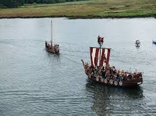

The Vikings: Brave Explorers and Fierce Warriors!
The Vikings were a group of seafaring people who lived in Scandinavia, which is the region of Europe that includes modern-day countries like Norway, Sweden, and Denmark. They lived during a time called the Viking Age, which lasted from around the late 8th century to the 11th century. The Vikings were known for their adventurous spirit, impressive ships, and warrior skills.
The Vikings were an adventurous and influential group of people who left a lasting impact on history. Their exploration, trade, and warrior skills shaped the medieval world and even reached distant lands. Studying the Vikings allows us to learn about their fascinating culture, mythology, and their place in the timeline of human civilization.
Timeline:
793 CE:The Viking Age begins with the raid on the monastery of Lindisfarne in England. This was the first recorded Viking raid.
850-1050 CE:The Vikings embark on many voyages, exploring new lands, and establishing settlements in places like Iceland, Greenland, and even reaching North America (around 500 years before Christopher Columbus!).
2911 CE: The Vikings settle in Normandy, a region in present-day France, under a treaty called the Treaty of Saint-Clair-sur-Epte.
1066 CEThe Viking Age comes to an end with the Battle of Stamford Bridge in England, where the last major Viking invasion takes place.
Fun Facts:
Shipmasters: The Vikings were excellent shipbuilders and navigators. They built longships, which were sleek, fast, and designed to sail both on open seas and shallow rivers. These ships helped the Vikings travel long distances and explore new lands.
Runes and Sagas: The Vikings had their own alphabet called runes, which they used to write their stories and messages. They also had oral traditions and epic poems called sagas, which were passed down through generations.
Norse Mythology: The Vikings had a rich mythology with gods like Odin, Thor, and Loki. They believed in Valhalla, a warrior's paradise where heroes who died in battle would go.
Trading Experts: The Vikings were skilled traders. They traded goods like furs, honey, and metals across Europe, Asia, and even Africa. They established trade routes and trading towns, becoming influential in the medieval economy.
Social Structure: Viking society was divided into different classes, including kings, warriors, farmers, and slaves. Women had more rights and freedoms than in many other societies of that time.
Important Historical Figures:
Erik the Red:He was a famous Viking explorer who discovered and settled in Greenland.
Leif Erikson:Son of Erik the Red, Leif is believed to be the first European to reach North America, around the year 1000, almost 500 years before Columbus.
Harald Hardrada: He was a powerful Viking king who led many raids and attempted to conquer England before his defeat at the Battle of Stamford Bridge.
Ragnar Lothbrok:A legendary Viking warrior and hero, Ragnar is known from sagas and popular culture, like the TV show "Vikings."